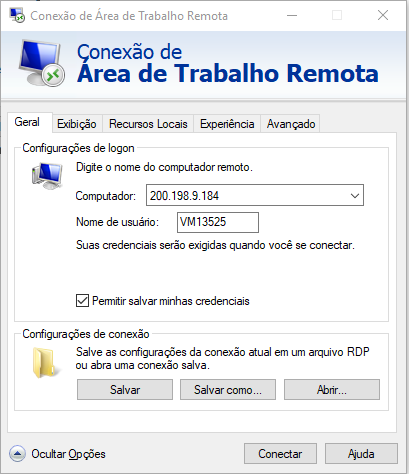

Importação
Especificação sobre uma coisa relevante.
Posso criar algo de mais de uma linha aqui.
- Context
- What
- Acceptance criteria
- Why
- How
- Open questions
- Examples/Research
- Low-fidelity mockup
- Other examples
Context

Apesar de serem ambas iniciativas da Open Knowledge, o CKAN não possui suporte nativo para a importação de pacotes de dados. Atualmente a CGE tem feito a importação por meio de uma ferramenta CLI desenvolvida internamente, o dpckan. O dpckan atualmente faz o mapeamento de algumas propriedades entre frictionless e CKAN, mas ainda armazena o arquivo datapackage.json como um recurso adicional no conjunto de dados do CKAN.
Apesar da importância de um fluxo de importação programático que permita a automatização das publicações e atualizações, as oficinas piloto com os órgãos e entidades tem demonstrado a importância de um fluxo de importação manual via interface gráfica para usuários iniciantes e/ou não técnicos1.
Open questions
Como o pacote de dados e seu conteúdo devem ser armazenados no CKAN?
É possível uma conversão ida-e-volta sem perda de metadados (lossless) entre um pacote de dados frictionless e um conjunto de dados CKAN?
Como permitir que alterações nos metadados sejam realizadas pela interface gráfica e/ou interface de linha de comando? Vide dpckan#153
Examples/Research
Replicação e sincronização de um data package com CKAN - Discussão sobre o fluxo de importação de pacotes de dados armazenados em um repositório git com indicação de ferramentas possivelmente úteis oferecidas por um ex-desenvolvedor da Open Knowledge. Ele relatou que a extensão ckanext-datapackager é próxima do que precisamos, mas não permite sobrescrever um conjunto de dados já existente.
Frictionless CKAN Mapper - Bibliotecas em Python e Javascript para conversão de pacotes de dados frictionless e conjuntos de dados CKAN.
CKAN Client Guide - Guia da Datopian sobre as bibliotecas ckan-client-py e ckan-client-js para interação programática com uma instância do CKAN
Support for Simple Data Format Data Packages #778 - Discussão sobre importação e exportação de pacotes de dados usando Open Refine
Advance CKAN plugin to the stable state #475